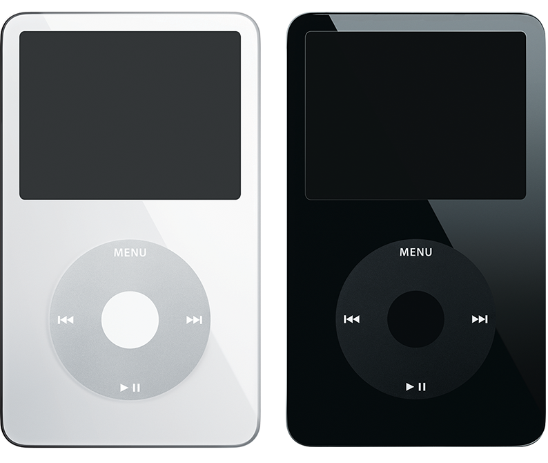
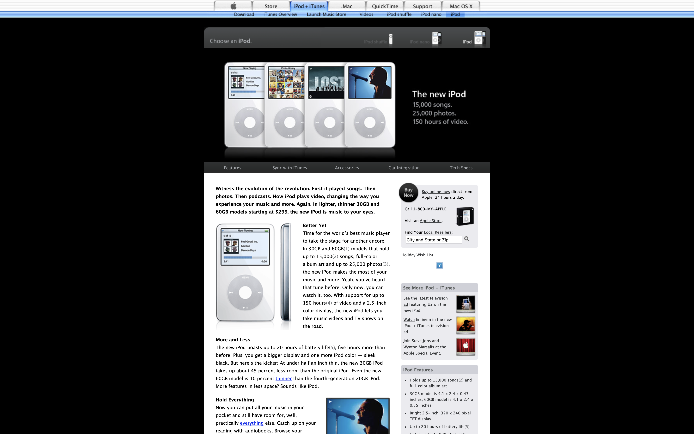

The new iPod
Witness the evolution of the revolution. First it played songs. Then photos. Then podcasts. Now iPod plays video, changing the way you experience your music and more. Again. In lighter, thinner 30GB and 60GB models starting at $299, the new iPod is music to your eyes.
The iPod (5th generation) is a hard drive-based iPod featuring a large, widescreen color display, a Click Wheel, and the capability of displaying photos and videos. It uses USB for syncing.
 